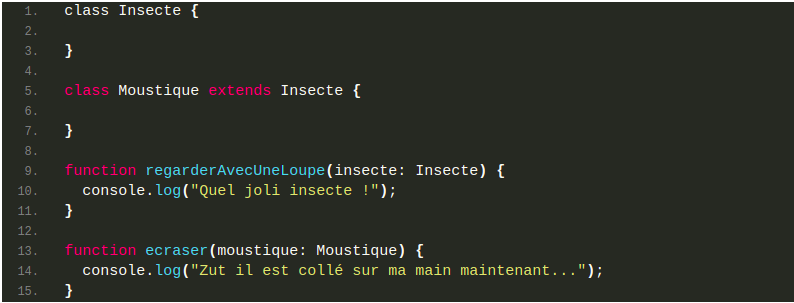

💪Challenge2 : L’arche de Noé en TypeScript
Voici une liste d’animaux et d’actions possibles sur ceux-ci :
Animaux
- Chat européen (noir)
- Chat chartreux
- Chien Terre-Neuve (noir)
- Chien Moon Moon
- Mésange
- Merle (noir)
- Thon
- Requin
- Asticot
Et les actions possibles:
- On peut photographier tous les animaux
- Tous les chats peuvent miauler
- Tous les chiens peuvent aboyer
- Tous les oiseaux peuvent voler
- Tous les poissons peuvent nager
- On peut caresser tous les animaux à 4 pattes
- On peut nourrir tous les animaux de couleur noire
Tu dois créer 7 fonctions (correspondants aux 7 actions), prenant chacune le bon type de paramètre. Tu dois donc créer au-dessus de ces 7 fonctions les types correspondants ! Par exemple, si les actions étaient de pouvoir regarder avec une loupe tous les insectes, et de pouvoir écraser les moustiques (les pauvres…), il faudrait créer ceci :
Attention, les 5 premières actions sont assez faciles, mais les deux dernières ont besoin d’une petite réflexion supplémentaire, avec l’usage des interfaces
Tu dois mettre ton code dans un fichier noe.ts, le mettre sur un Gist et mettre le lien de ce gist comme solution.
PS : Aucun insecte n’a été maltraité durant la réalisation de cette quête.
Critères de validation
- Les interfaces sont utilisées
- Les classes sont utilisées
- L’héritage est utilisé
- Il y a bien 7 fonctions
- Les fonctions ne doivent avoir qu’un seul paramètre
- Les fonctions prennent en paramètre les bons animaux